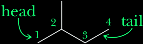

Terpene
A terpene is a compound whose carbon skeleton can be divided into two or more units that are identical with the carbon skeleton of isoprene (2-methyl-1,3-butadiene). Carbon 1 of an isoprene unit is called the head; carbon 4 is called the tail. Terpenes are formed by bonding the tail of one isoprene unit to the head of another. This is called the isoprene rule.
(Isoprene) |  |
A study of terpenes provides a glimpse of the wondrous diversity that nature can generate from a simple carbon skeleton. Terpenes also illustrate an important principle of the molecular logic of living systems, namely, that in building large molecules, small subunits are bonded together enzymatically by an iterative process and then modifi ed by subsequent precise enzyme-catalyzed reactions. Chemists use the same principles in the laboratory, but our methods do not have the precision and selectivity of the enzyme-catalyzed reactions of living systems. Probably the terpenes most familiar to you, at least by odor, are components of the so called essential oils obtained by steam distillation or ether extraction of various parts of plants. Essential oils contain the relatively low-molecular-weight substances that are in large part responsible for characteristic plant fragrances. Many essential oils, particularly those from flowers, are used in perfumes. One example of a terpene obtained from an essential oil is myrcene, C10H16, a component of bayberry wax and oils of bay and verbena. Myrcene is a triene with a parent chain of eight carbon atoms and two one-carbon branches.
 Geraniol
Geraniol(rose and other flowers)
(oil of lemon and orange)
(peppermint)
(camphor tree)
(turpentine)
Head-to-tail bonds between isoprene units are vastly more common in nature than are the alternative head-to-head or tail-to-tail patterns. Figure 5.4 shows structural formulas of five more terpenes, all derived from two isoprene units. Geraniol has the same carbon skeleton as myrcene. In the last four terpenes of Figure 5.4, the carbon atoms present in myrcene and geraniol are cross-linked to give cyclic structures. To help you identify the points of cross linkage and ring formation, the carbon atoms of the geraniol skeleton are numbered 1 through 8. This numbering pattern is used in the remaining terpenes to show points of cross-linking. In both limonene and menthol, a carbon-carbon bond is present between carbons 1 and 6. In a-pinene, carbon-carbon bonds are present between carbons 1 and 6 and between carbons 4 and 7. In camphor, they are between carbons 1 and 6 and between 3 and 7. Vitamin A, a terpene with the molecular formula C20H30O, consists of four isoprene units linked head-to-tail and cross-linked at one point to form a six-membered ring.
Carotenoids
About 200 naturally abundant tetraterpenes are known to date and referred to as carotenoids, because all of them represent structural variants or degradation derivatives of β-carotene. They are strongly coloured red or orange, and found in foods that are coloured red, orange or green including tomatoes, carrots and spinach. Carotenoids comprise molecules with hydrocarbon structures including α-, β-, and γ-carotene and lycopene as well as molecules with one or more polar substituents attached to the hydrocarbon backbone including astaxanthin, zeaxanthin, lutein and β-cryptoxanthin.
Some of the most common carotenoids act as provitamin A, being converted to vitamin A: One molecule of β-carotene can be cleaved by the intestinal enzyme β,β-carotene 15,15'-monooxygenase into two molecules of vitamin A. Provitamin A activity is restricted to carotenoids such as β-carotene in which at least half of the molecule shares the ring and chain structure of vitamin A. The role of carotenoids in cancer prevention is uncertain.
Carotenoids also have antioxidant properties and may contribute to a reduced risk of coronary heart disease by protecting low density lipoproteins against oxidation.
Lycopene
Lycopene is a symmetrical tetraterpene assembled from eight isoprene units.
Lycopene is the major pigment in tomatoes and some other red fruits like watermelon. Approximately 20 mg of lycopene can be isolated from 1 kg of ripe tomatoes. Lycopene does not have provitamin A activity but it has been the subject of much research because it may provide some protection against prostate cancer in men, and considered Lycopene is an important antioxidant that may help prevent oxidative damage in atherosclerosis.